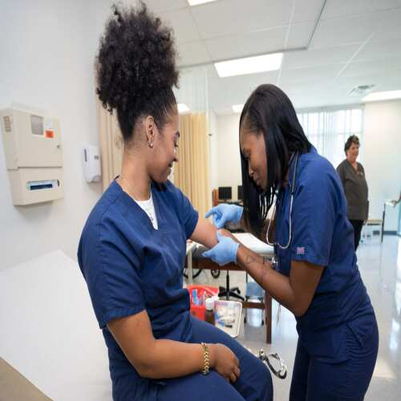

Anthony Macias
My name is Anthony Macias and I am a highly motivated undergraduate student at UCR majoring in Biology. I have a passion for learning and exploring the intricacies of the natural world. With 1 year of research experience under my belt, I have developed a strong foundation in scientific methodology and data analysis. I am committed to furthering my understanding of biological processes and contributing to the scientific community. My dedication, attention to detail, and enthusiasm makes me an invaluable asset to any research team.
My love for helping others is a testament to my selflessness and compassion. Whether it's volunteering at a local non-profit or lending a listening ear to a friend in need, I always go above and beyond to make a positive impact in people's lives. My genuine desire to make a difference and my ability to connect with others on a deep level makes me an invaluable asset to any company.
My passion for hospitality and the medical field is a unique combination that speaks to my diverse interests and talents. My love for hospitality is evident in my ability to create warm and welcoming environments where people feel comfortable and at ease. Meanwhile, my fascination with the medical field stems from a deep desire to help people heal and improve their quality of life.
Experience
Medical Assistant Intern
• Demonstrated adequacy in taking patient medical history and vital signs
• Ensured the sterility, sanitation, and upkeep of all exam rooms and equipment at the facility.
• Performed routine medical data clerk tasks by inputting patients vital signs and other key information into the EPIC system in accordance with all HIPAA, CLIA, and OSHA regulations.
District Intern
• Generated a variety of lesson plans along with ventures that allowed each and everyone of the children to participate and demonstrate their capabilities properly
• Ensured that parents completed necessary documents, provided vital information about the program, and answered any questions that children or parents had
Tutor
• Offered adequacy in tutoring to students
• Reviewed and graded student assignments
• Ensured each student was able to grow academically
• Communicated with Parents
Education
UC Riverside
Portfolio
